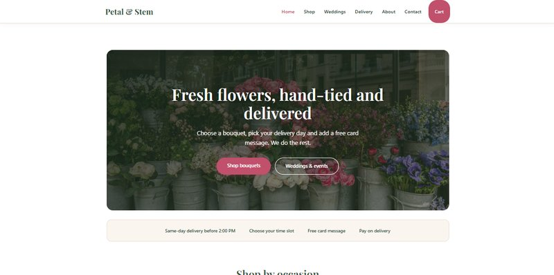
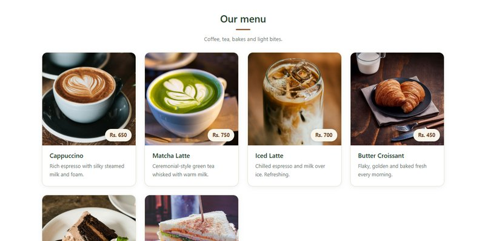
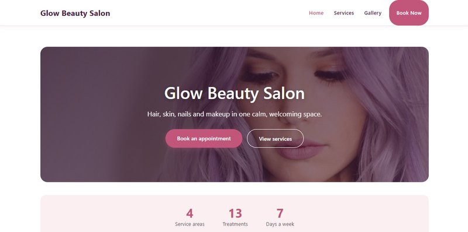
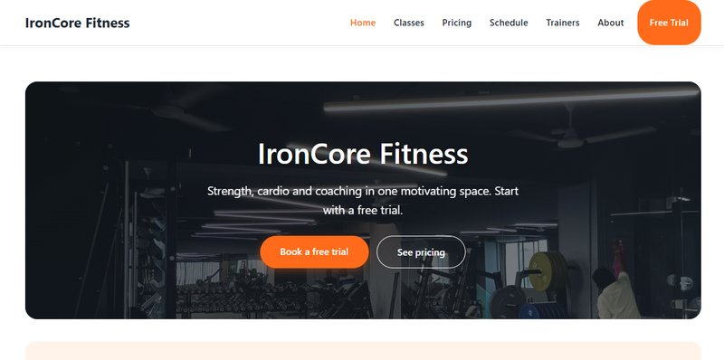
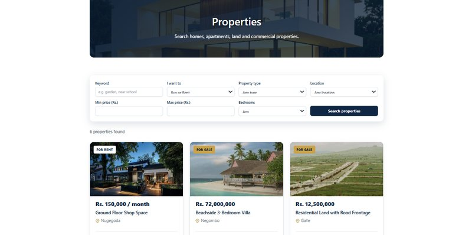
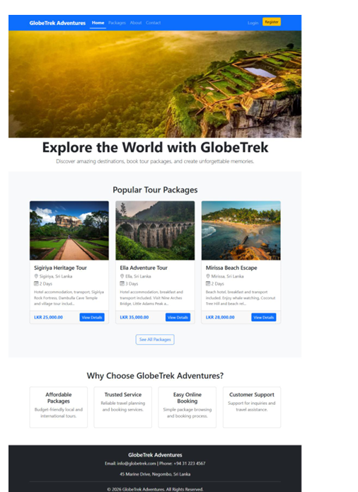
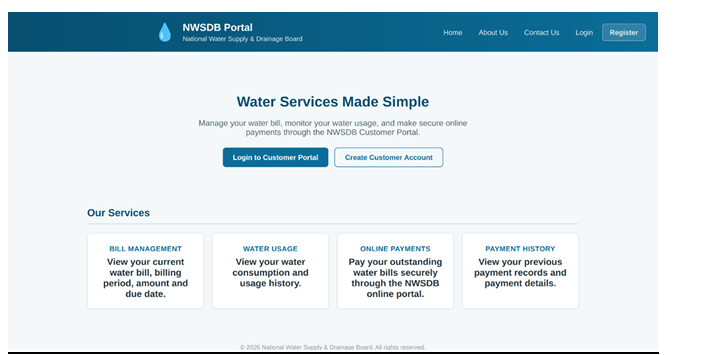

Hello, I'm
Hewa Palihakkarage Udeshi Irushika Shamodani
WordPress Developer Trainee | Computing & Software Engineering
Computing and Software Engineering student from Panadura, Sri Lanka, who has completed the Higher Diploma programme (final results pending), looking for a WordPress Developer (Trainee) or Web Developer Intern opportunity.

About Me
I am a Computing and Software Engineering student who has completed a Higher Diploma programme (Cardiff Metropolitan University, UK, via ICBT Campus). My final results are pending.
I hold a certificate in Web Design Using WordPress and have independently developed five WordPress websites, including WooCommerce functionality and custom PHP plugins. I have also built database-driven web applications through academic projects using HTML, CSS, JavaScript, PHP, Bootstrap and MySQL, with a focus on responsive web development and UI/UX design.
I am a reliable, detail-oriented team member with strong problem-solving skills, and I am keen to learn WordPress best practices from experienced developers.
Technical Skills
Back-End & API Development
Database Management
Programming & Software Development
Software Testing & QA
Tools
IT Fundamentals & Networking
WordPress Projects
Five WordPress websites that I developed independently as personal practice projects.

Independent WordPress Project
Petal & Stem – Florist Website
A florist website built with WordPress and WooCommerce. It includes an online flower shop with a product catalogue, cart and checkout, plus custom delivery scheduling, gift message features and wedding/event enquiry functionality. Custom WordPress plugin functionality was written in PHP.

Independent WordPress Project
Green Leaf Café – Café Website
A responsive café website built with WordPress, with Home, About, Menu and Contact pages. A custom PHP plugin provides contact form functionality and an admin message management area.

Independent WordPress Project
Glow Beauty Salon – Beauty Salon Website
A responsive beauty salon website built with WordPress, with Services, Pricing, Gallery and Contact pages. It includes an online appointment request form and custom booking management functionality written in PHP.

Independent WordPress Project
IronCore Fitness – Gym Website
A responsive gym website built with WordPress, featuring fitness classes, membership plans, weekly schedules and trainer profiles. It also includes a custom free-trial booking system with booking management functionality.

Independent WordPress Project
Prime Estates – Real Estate Website
A real estate website built with WordPress, with property listings, property details and property search/filtering functionality. Customer enquiries are handled through a custom WordPress plugin.
Academic Projects
Academic projects completed during my Higher Diploma.

Higher Diploma Final Year Group Project
Smart Emergency Blood Bank & Donor Matching System (SEBD)
My main responsibility was Quality Assurance. I prepared test plans and test cases independently, ran functional testing across the Donor, Healthcare Organization, Admin and Public modules, and carried out end-to-end workflow testing, comparing actual behaviour against expected results and reporting issues. I also contributed to UI design and supported development of the Healthcare Organization, Admin and Donor modules.

Individual Academic Web Development Project
GlobeTrek Adventures
A web-based travel booking and management system with separate Customer, Staff and Admin interfaces. It includes customer registration and authentication, package browsing and search, booking management, staff tools for packages, booking confirmation and inquiries, and an admin dashboard with booking, revenue, user and package statistics. Built on a relational MySQL database for users, packages, bookings, payments and inquiries.

Individual Academic Project
NWSDB Water Billing Management System
A web-based water billing system with separate customer and staff portals. Features include registration, authentication, profile management, bill generation, meter reading management and payment history. Data is managed through SQL Server with role-based access control, REST API endpoints connect the client and backend, and a separate payment partner application simulates the bill payment workflow.

Individual Academic Project
PrintXpress – Android Printing Service Application
An Android application that provides access to printing services. I designed the user interfaces for the printing workflow and implemented document upload and printing order placement, and I worked on payment-related functionality within the app.
Individual Academic Project
Green Basket – Grocery Management System
A console-based system for managing organic grocery products and inventory. It has authentication with separate access for Sales Assistants and Store Managers, product and category management with file handling for data storage and retrieval, and low-stock alerts to support restocking.
Individual Academic Project
Tour Mate – Cab Service Management System
A console-based cab service management system written in C++. It covers vehicle management (vehicle details and pricing), sales management to record customer transactions, and user authentication with menu-driven navigation, applying arrays and structured programming concepts.
Certifications
Web Design Using WordPress
SuhuruSara (LK Domain Registry)
2025
Database Management Systems & SQL
SuhuruSara (LK Domain Registry)
March 2026
Contact
I am looking for a WordPress Developer (Trainee) or Web Developer Intern position. Feel free to get in touch.
- Email irsuhika@gmail.com
- LinkedIn linkedin.com/in/u-irushika-se
- GitHub github.com/Irushika-se
- Location Panadura, Sri Lanka